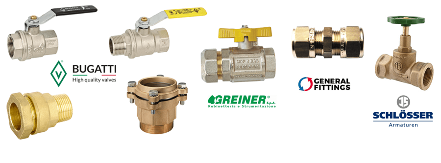

Divize
Mosaz
Svěrné spojky, kulové kohouty, ventily a tvarovky na vodu a plyn.

Bugatti
Mosazné kované svěrné spojky a kulové kohouty na vodu a plyn. Výrobce Valvosanitaria Bugatti S.p.A.
11 produktových řadValvopatSvěrné spojky pro PE trubky 20–110 mm · voda, plynValvofitSvěrné spojky pro PE trubky 20–63 mm · voda, plynValvoferSvěrné spojky pro ocelové trubky 3/8"–2" · voda, plynOregonKované kulové kohouty na vodu 1/4"–2" · do 185 °CNew JerseyKované kulové kohouty na vodu 1/2"–4" · do 120 °CColoradoKované kulové kohouty na plyn 1/4"–4"CaliforniaKované kulové kohouty na voduAlaskaMrazuodolné zahradní kulové kohoutyMinnesotaPodumyvadlové a vypouštěcí kulové kohoutyNebraskaZpětné klapky a filtrSt. LouisŠroubení a průchodka
Greiner
Mosazné svěrné spojky na vodu a plyn, kulové kohouty na plyn a držáky vodoměrů.
6 produktových řadGeneral Fittings
Mosazné svěrné spojky a tvarovky na vodu a plyn.
2 produktové řadySchlösser
Mosazné přímé a šikmé ventily, topenářské armatury a nezámrzné výtokové ventily.
3 produktové řadyPotřebujete poradit s výběrem?
Technické poradenství po telefonu nebo e-mailem, Po–Pá 8:00–15:30.